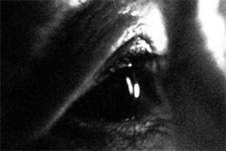

Sounding Glass

Sylvia Schedelbauer – D 2011 – HD – 10 Min.
R: Sylvia Schedelbauer – V: Light Cone
HD – Ohne Dialoge
Ein Wald, ein Mann, ein Krieg. – Bilder aus der Flut von Material, das während des zweiten Weltkriegs aufgenommen wurde.
Dienstag 14.10. 22:30 Uhr Werkstattkino
Sylvia Schedelbauer, geb. in Tokio. Umzug nach Berlin 1993, wo sie seitdem lebt. Studium an der Akademie der Künste in Berlin.
Filme (Auswahl): Memories 2004 – False Friends 2007 – Way Fare 2009 – Sounding Glass 2011